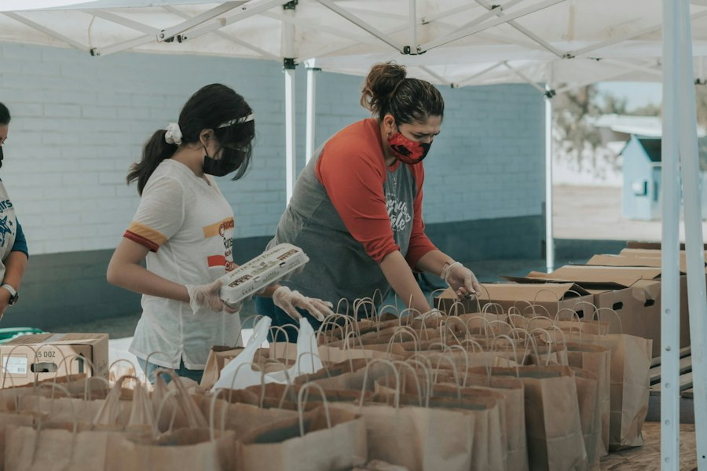

Start with a question
Each topic explains a social issue through a defined geographic area and research question.
Explore local evidence, understand its limits, and find reliable ways to help. Four community issues, each with a dedicated space.
Choose a topic to enter its own research page. Daily updates live in a separate briefing.

Photographs represent these topics; they do not depict the specific data subjects or organizations discussed. View photo credits ↗
Community Lens is an independent student project by Yixiao Zhang. It connects local public records to clear visual stories and official service directories. It is not affiliated with the organizations linked on the site.
Each topic explains a social issue through a defined geographic area and research question.
Data sources, reporting periods and important limitations are stated alongside the visuals.
Official shelter, food and housing help links direct visitors to the organizations offering services.
The Daily Lens queries Long Beach shelter records when opened. Housing counts and food insecurity surveys are released much less frequently, so their cards display the latest published research date—not a fictional daily update. Education analysis is still in development.
All photos on this overview are used under the Unsplash License ↗. They illustrate topics and should not be interpreted as images of the actual people, organizations or cases in our research.
Education is the next Community Lens research chapter. Its data analysis is not published yet. We are identifying reputable neighborhood indicators and asking how educational opportunities differ across Los Angeles communities.
Explore a regional education data source ↗Fresh public records where available. Latest verified research elsewhere. Every card names its coverage and reporting date.
Checking the latest official record date…
These are records dated to one day in Long Beach—not unique animals across Los Angeles or live capacity. Published records can arrive late or be revised.
Explore animal research ↗Official source ↗No verified daily countywide food insecurity series is available here. This is the latest research snapshot on the site, not a count of what happened today.
Explore food access ↗LAHSA's annual count cannot show daily entries into homelessness or daily shelter vacancies. Explore regional estimates and official help resources.
Explore housing ↗We have not published a vetted daily education indicator. Instead, start with an established neighborhood data source.
Explore education data ↗Animal shelter records carry event dates and can support daily counts when the source has published them. Food insecurity surveys and homelessness point-in-time estimates measure different phenomena on much slower schedules. This briefing never substitutes old statistics for today's events. A blank or unavailable animal count means the live source could not be verified—it does not mean zero animals.
City of Long Beach · 2024–2025 · Official public records
How do outcomes differ between dogs and cats? What brings animals into the shelter, and how long are they recorded there? Explore three connected questions below.
Outcome records grouped by outcome year · dog / cat comparison
2025 intake records reveal different distributions of stray animals and owner surrenders. These are intake-date cohorts, so do not compare their totals directly with the outcome-date cohort above.
Average recorded intake duration for selected 2025 outcomes, measured in days. An average can conceal large differences among individual animals.
intake_duration field, grouped by outcome date and type. They are not a prediction of an individual animal's stay.A good visualization can reveal patterns. It cannot, by itself, establish causes.
Why are the paths through a shelter so different—and what additional context would help the public interpret those differences responsibly?
Explore real shelters and rescue organizations across the Los Angeles area. Find contact details, view their current adoptable animals, or visit official foster program pages.
Map markers are address-range estimates from the U.S. Census Geocoder, not verified building entrances. Use the official directions link for navigation. Profiles link to each organization's official website, which maintains its own animal listings and program rules. Community Lens does not host live animal availability or accept adoption applications.
Los Angeles County · 2021–2025 · USC Understanding America Study
Food insecurity means not having reliable access to enough food. How has this changed across LA County, and how can someone find help right now?
Estimated share of households experiencing food insecurity in the preceding 12 months
Food insecurity is not distributed evenly. The 2025 report estimates 35% of lower-income households experienced food insecurity, compared with 24% of households countywide. Income is one important factor, but these data alone cannot explain every household's circumstances.
Food banks often distribute through partner pantries rather than their warehouses. These official directories are better places to confirm current locations, schedules, and eligibility.
Find local partner pantries serving Santa Monica, Venice, Culver City and surrounding areas.
Find Westside food help ↗Use the official pantry locator to find distributions and community partner organizations.
Open pantry locator ↗Santa Monica College students can explore on-campus pantry and CalFresh assistance programs.
Explore SMC food support ↗Find food and other social services through a multilingual community referral service.
Explore 211 LA food help ↗This site does not determine benefits eligibility, operate a pantry, or track real-time food availability. Please use the linked organizations for current information. In the U.S., you can also call 2-1-1 for local referral assistance where available.
Los Angeles County · 2023–2026 · LAHSA Homeless Count
Behind every estimate is a person. Explore the geography and shelter status of homelessness in Los Angeles—then connect directly to organizations offering housing support.
Estimated people experiencing homelessness on one night each year · Point-in-Time Count
The 2026 countywide estimate rose slightly from the finalized 2025 count, but LAHSA says this increase was not statistically significant.
Source: LAHSA 2026 data release ↗ and finalized 2025 corrections ↗. Estimates are snapshots, not the number of people who experienced homelessness at any point during the year.
Select a year to compare estimated counts across LAHSA's eight Service Planning Areas (SPAs).
Explore how areas change from year to year. Total counts alone cannot tell us why.
View all eight LAHSA area summaries ↗SPAs are large administrative service regions—not individual neighborhoods. SPAs 2, 3 and 8 exclude counts handled separately by Glendale, Pasadena and Long Beach Continuums of Care. Do not sum these eight bars to reproduce the full LA County total.
In 2026, LAHSA estimated 49,002 people were unsheltered across LA County, compared with 24,038 people in sheltered locations. A housing count is not the same as a count of available shelter beds.
2026 countywide point-in-time estimate · LAHSA official release ↗
Choose the situation that matches what you need. The official providers—not this site—confirm services, availability, access requirements and eligibility.
Education remains a curated research starting point, not a completed analysis.
Investigate neighborhood-level differences in opportunity using regional social indicators.
Explore neighborhood data ↗Research source · Neighborhood Data for Social ChangeCity of Long Beach Animal Shelter Data ↗. Aggregated queries use the official open-data API. Data queried October 27, 2026 Pacific. Figures are a dated snapshot and may change as records are revised.
Intake and outcome analyses use different dates and denominators. Categories reflect administrative records, not necessarily unique animals. The data charts cover Long Beach only; the wider shelter directory is a separate service guide, not part of the statistical sample.
Concept and research direction: Yixiao Zhang. AI-assisted development. Not affiliated with any city or shelter. Shelter directory information was checked against official sites in October 2026, but animal availability and foster eligibility can change.